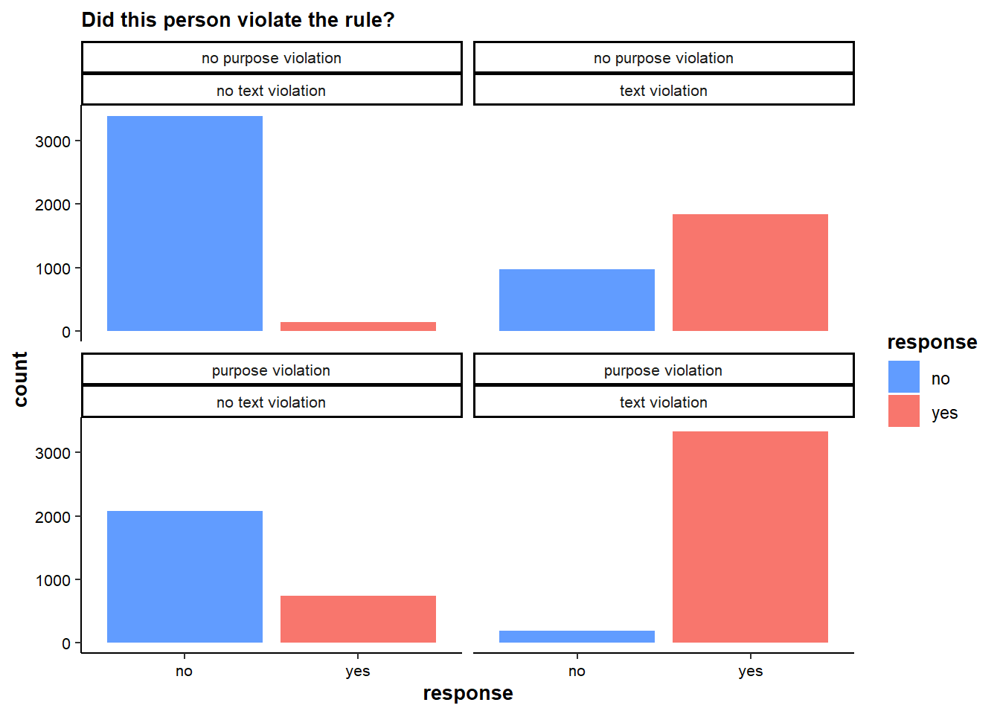
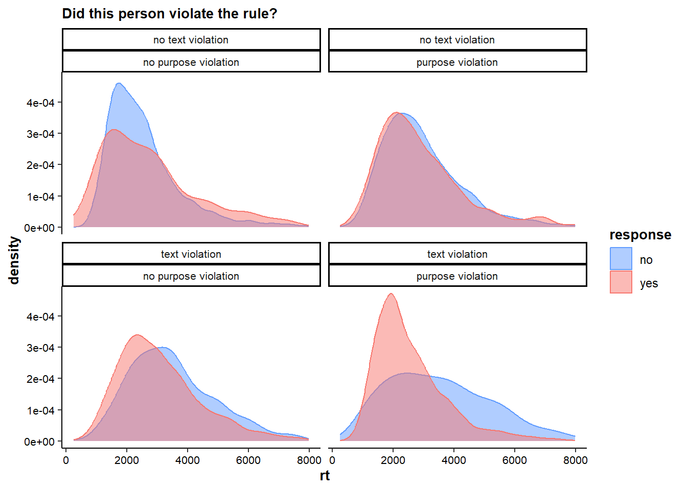
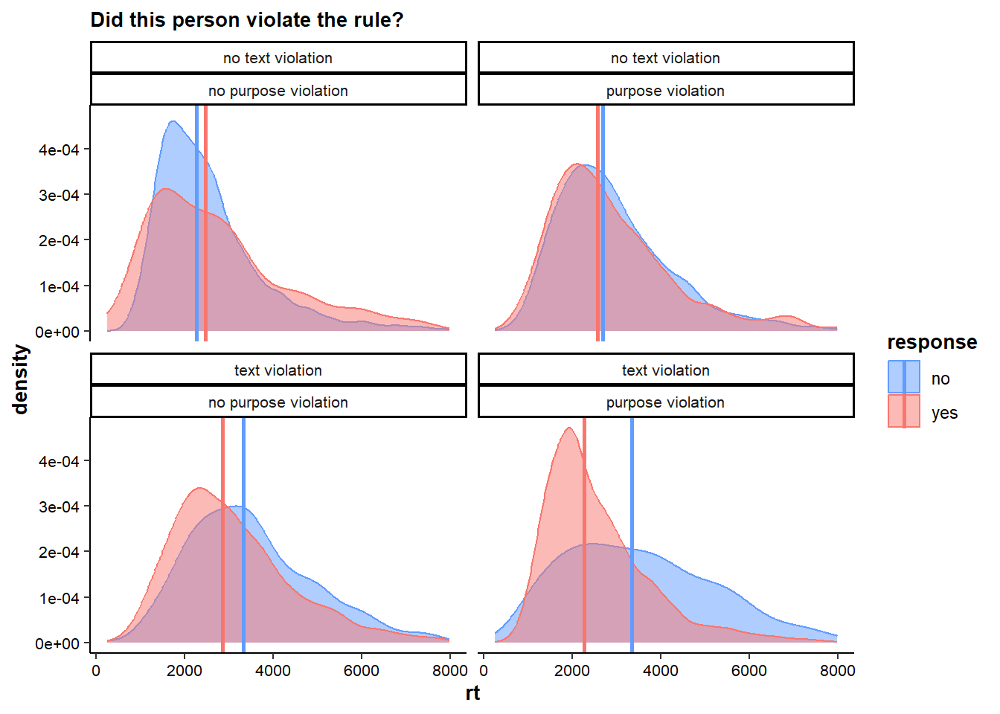

library(lmtest)
library(lme4)
library(nlme)
library(rcompanion)
library(reshape2)
library(here)
library(tidyverse)analysis
packages
data
clean <- read.csv(here("data","clean.csv"))plots
theme
mytheme <- theme_classic()+
theme(axis.text.x = element_text(color="black",size=8),
axis.title.x = element_text(color="black",size=10,face="bold"),
axis.text.y = element_text(color="black",size=8),
axis.title.y = element_text(color="black",size=10,face="bold"),
strip.text.x = element_text(size = 8),
legend.title = element_text(size = 10),
title = element_text(color="black",size=10,face="bold"),
legend.position = "right")judgments
plot
p1 <- clean %>%
mutate(text=case_when(
text==0 ~ "no text violation",
text==1 ~ "text violation"
),
purpose=case_when(
purpose==0 ~ "no purpose violation",
purpose==1 ~ "purpose violation"
),
response=case_when(
response==0 ~ "no",
response==1 ~ "yes")
) %>%
ggplot(aes(x=response))+
geom_bar(stat="count",aes(fill=response))+
mytheme+
facet_wrap(~purpose+text)+
labs(subtitle="Did this person violate the rule?")+
scale_fill_manual(values=c("#619CFF","#F8766D"))
p1
save
ggsave(p1,file=here("figures","judgments.png"),width=13,height=17,units="cm")rts
plot
p2 <- clean %>%
mutate(text=case_when(
text==0 ~ "no text violation",
text==1 ~ "text violation"
),
purpose=case_when(
purpose==0 ~ "no purpose violation",
purpose==1 ~ "purpose violation"
),
response=case_when(
response==0 ~ "no",
response==1 ~ "yes")
) %>%
ggplot(aes(x=rt))+
geom_density(aes(fill=response,color=response),alpha=0.5)+
facet_wrap(~text+purpose)+
mytheme+
labs(subtitle="Did this person violate the rule?")+
scale_fill_manual(values=c("#619CFF","#F8766D"))+
scale_color_manual(values=c("#619CFF","#F8766D"))
p2
#median rts for overlaying
median_rts <- clean %>%
mutate(text=case_when(
text==0 ~ "no text violation",
text==1 ~ "text violation"
),
purpose=case_when(
purpose==0 ~ "no purpose violation",
purpose==1 ~ "purpose violation"
),
response=case_when(
response==0 ~ "no",
response==1 ~ "yes")
) %>%
group_by(text,purpose,response) %>%
summarize(rt = median(rt))
#overlay medians
p2 <- p2 + geom_vline(data=median_rts,aes(xintercept=rt,color=response),linewidth=1)
p2
save
ggsave(p2,file=here("figures","rts.png"),width=13,height=17,units="cm")preregistered analyses
judgments
descriptives
clean |>
group_by(condition,response) |>
summarize(n = n()) |>
mutate(prop = round(n/sum(n),2),
se = sqrt(prop*(1-prop)/n),
CI_lower = round(prop - 1.96*se,2),
CI_upper = round(prop + 1.96*se,2))# A tibble: 8 × 7
# Groups: condition [4]
condition response n prop se CI_lower CI_upper
<chr> <int> <int> <dbl> <dbl> <dbl> <dbl>
1 full violation 0 191 0.05 0.0158 0.02 0.08
2 full violation 1 3329 0.95 0.00378 0.94 0.96
3 no violation 0 3392 0.96 0.00336 0.95 0.97
4 no violation 1 140 0.04 0.0166 0.01 0.07
5 purpose violation 0 2082 0.74 0.00961 0.72 0.76
6 purpose violation 1 743 0.26 0.0161 0.23 0.29
7 text violation 0 975 0.35 0.0153 0.32 0.38
8 text violation 1 1839 0.65 0.0111 0.63 0.67logistic regression
“1) A mixed-effects logistic regression of rule violation judgments, with text, purpose and the text*purpose interactions as fixed effects (and scenarios and participants as crossed, random effects). - We predict main (i.e., positive) effects of text and purpose.”
# null model
null <- glmer(response ~ 1 + (1|subj_code) + (1|case), data = clean,na.action=na.exclude, family=binomial)
# main effect text
purpose_only <- glmer(response ~ purpose + (1|subj_code) + (1|case), data = clean,na.action=na.exclude, family=binomial)
purpose_text <- glmer(response ~ purpose + text + (1|subj_code) + (1|case), data = clean,na.action=na.exclude, family=binomial)
lrtest(purpose_only,purpose_text) # better with textLikelihood ratio test
Model 1: response ~ purpose + (1 | subj_code) + (1 | case)
Model 2: response ~ purpose + text + (1 | subj_code) + (1 | case)
#Df LogLik Df Chisq Pr(>Chisq)
1 4 -8061.9
2 5 -4711.8 1 6700.3 < 2.2e-16 ***
---
Signif. codes: 0 '***' 0.001 '**' 0.01 '*' 0.05 '.' 0.1 ' ' 1# main effect purpose
text_only <- glmer(response ~ text + (1|subj_code) + (1|case), data = clean,na.action=na.exclude, family=binomial)
lrtest(text_only,purpose_text) # better with purposeLikelihood ratio test
Model 1: response ~ text + (1 | subj_code) + (1 | case)
Model 2: response ~ purpose + text + (1 | subj_code) + (1 | case)
#Df LogLik Df Chisq Pr(>Chisq)
1 4 -5535.2
2 5 -4711.8 1 1646.7 < 2.2e-16 ***
---
Signif. codes: 0 '***' 0.001 '**' 0.01 '*' 0.05 '.' 0.1 ' ' 1# interaction
interaction <- glmer(response ~ purpose * text + (1|subj_code) + (1|case), data = clean,na.action=na.exclude, family=binomial)
lrtest(purpose_text, interaction) # not betterLikelihood ratio test
Model 1: response ~ purpose + text + (1 | subj_code) + (1 | case)
Model 2: response ~ purpose * text + (1 | subj_code) + (1 | case)
#Df LogLik Df Chisq Pr(>Chisq)
1 5 -4711.8
2 6 -4711.8 1 0.0021 0.9635# final model
finalmodel_judgments <- purpose_text
summary(finalmodel_judgments)Generalized linear mixed model fit by maximum likelihood (Laplace
Approximation) [glmerMod]
Family: binomial ( logit )
Formula: response ~ purpose + text + (1 | subj_code) + (1 | case)
Data: clean
AIC BIC logLik deviance df.resid
9433.6 9470.8 -4711.8 9423.6 12686
Scaled residuals:
Min 1Q Median 3Q Max
-7.0641 -0.4278 -0.1550 0.2780 7.8540
Random effects:
Groups Name Variance Std.Dev.
subj_code (Intercept) 0.12546 0.3542
case (Intercept) 0.05472 0.2339
Number of obs: 12691, groups: subj_code, 119; case, 9
Fixed effects:
Estimate Std. Error z value Pr(>|z|)
(Intercept) -3.28457 0.10692 -30.72 <2e-16 ***
purpose 2.23594 0.06420 34.83 <2e-16 ***
text 3.96894 0.06605 60.09 <2e-16 ***
---
Signif. codes: 0 '***' 0.001 '**' 0.01 '*' 0.05 '.' 0.1 ' ' 1
Correlation of Fixed Effects:
(Intr) purpos
purpose -0.485
text -0.502 0.575# odds ratios from coefficients
# effect of purpose violation:
exp(2.23594) # -> more likely that people say yes to violate question[1] 9.355272# effect of text violation:
exp(3.96893) # -> more likely that people say yes to violate question, stronger effect than for purpose[1] 52.92787nagelkerke(finalmodel_judgments,null)$Models
Model: "glmer, response ~ purpose + text + (1 | subj_code) + (1 | case), clean, binomial, na.exclude"
Null: "glmer, response ~ 1 + (1 | subj_code) + (1 | case), clean, binomial, na.exclude"
$Pseudo.R.squared.for.model.vs.null
Pseudo.R.squared
McFadden 0.462837
Cox and Snell (ML) 0.472601
Nagelkerke (Cragg and Uhler) 0.630968
$Likelihood.ratio.test
Df.diff LogLik.diff Chisq p.value
-2 -4059.8 8119.7 0
$Number.of.observations
Model: 12691
Null: 12691
$Messages
[1] "Note: For models fit with REML, these statistics are based on refitting with ML"
$Warnings
[1] "None"rts
“2) A mixed-effects ordinal regression of response times, with text, purpose and the textx purpose interactions as fixed effects (and scenario and participant as crossed random effects). -We predict an interaction effect of text*purpose (indicating longer response times on conflict trials).”
descriptives
clean |>
group_by(condition) |>
summarize(median = median(rt))# A tibble: 4 × 2
condition median
<chr> <dbl>
1 full violation 2307
2 no violation 2284.
3 purpose violation 2658
4 text violation 2998.clean |>
group_by(response) |>
summarize(median = median(rt))# A tibble: 2 × 2
response median
<int> <dbl>
1 0 2551
2 1 2488clean |>
group_by(condition,response) |>
summarize(median = median(rt))# A tibble: 8 × 3
# Groups: condition [4]
condition response median
<chr> <int> <dbl>
1 full violation 0 3339
2 full violation 1 2276
3 no violation 0 2282
4 no violation 1 2478.
5 purpose violation 0 2690.
6 purpose violation 1 2566
7 text violation 0 3331
8 text violation 1 2858 linear model
# null model
null <- glmer(rt ~ 1 + (1|subj_code) + (1|case), data = clean,na.action=na.exclude)
# main effect text
purpose_only <- lmer(rt ~ purpose + (1|subj_code) + (1|case), data = clean,na.action=na.exclude)
purpose_text <- lmer(rt ~ purpose + text + (1|subj_code) + (1|case), data = clean,na.action=na.exclude)
lrtest(purpose_only,purpose_text) # better with textLikelihood ratio test
Model 1: rt ~ purpose + (1 | subj_code) + (1 | case)
Model 2: rt ~ purpose + text + (1 | subj_code) + (1 | case)
#Df LogLik Df Chisq Pr(>Chisq)
1 5 -107698
2 6 -107649 1 96.394 < 2.2e-16 ***
---
Signif. codes: 0 '***' 0.001 '**' 0.01 '*' 0.05 '.' 0.1 ' ' 1# main effect purpose
text_only <- lmer(rt ~ text + (1|subj_code) + (1|case), data = clean,na.action=na.exclude)
lrtest(text_only,purpose_text) # better with purposeLikelihood ratio test
Model 1: rt ~ text + (1 | subj_code) + (1 | case)
Model 2: rt ~ purpose + text + (1 | subj_code) + (1 | case)
#Df LogLik Df Chisq Pr(>Chisq)
1 5 -107670
2 6 -107649 1 40.973 1.544e-10 ***
---
Signif. codes: 0 '***' 0.001 '**' 0.01 '*' 0.05 '.' 0.1 ' ' 1# interaction text x purpose
interaction <- lmer(rt ~ purpose*text + (1|subj_code) + (1|case), data = clean,na.action=na.exclude)
lrtest(purpose_text,interaction) # betterLikelihood ratio test
Model 1: rt ~ purpose + text + (1 | subj_code) + (1 | case)
Model 2: rt ~ purpose * text + (1 | subj_code) + (1 | case)
#Df LogLik Df Chisq Pr(>Chisq)
1 6 -107649
2 7 -107279 1 740.75 < 2.2e-16 ***
---
Signif. codes: 0 '***' 0.001 '**' 0.01 '*' 0.05 '.' 0.1 ' ' 1interaction with response
interaction_resp <- lmer(rt ~ purpose*text*response + (1|subj_code) + (1|case), data = clean,na.action=na.exclude)
lrtest(interaction, interaction_resp)Likelihood ratio test
Model 1: rt ~ purpose * text + (1 | subj_code) + (1 | case)
Model 2: rt ~ purpose * text * response + (1 | subj_code) + (1 | case)
#Df LogLik Df Chisq Pr(>Chisq)
1 7 -107279
2 11 -107200 4 158.56 < 2.2e-16 ***
---
Signif. codes: 0 '***' 0.001 '**' 0.01 '*' 0.05 '.' 0.1 ' ' 1